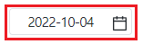

[InputCalendar] 유효하지 않은 값이 입력된 경우 직전 값으로 되돌리기
1개요
입력한 값이 유효한 날짜가 아닌 경우 직전 값으로 복원하는 예제입니다. 이 기능은 InputCalendar의 속성 "dateValidSet"을 활성화하여 사용할 수 있습니다.
2구현된 기능
입력값이 유효하지 않은 경우 직전 값으로 복원하기
3예제 테스트 방법
3.1입력값이 유효하지 않은 경우 직전 값으로 복원하기
- STEP1. 초기 입력값을 확인합니다.
영역 [속성 dateValidSet 적용]의 InputCalendar의 초기 값을 확인합니다.
초기 값은 예제 파일이 실행된 날짜가 출력됩니다.
[브라우저(Chrome) 실행 예시]
- STEP2. 유효하지 않은 날짜를 입력합니다.
InputCalenar에 "99999999"를 입력합니다.
[브라우저(Chrome) 실행 예시]
- STEP3. 컴포넌트의 외부 영역을 클릭하여 커서를 제거합니다.
[브라우저(Chrome) 실행 예시]

- STEP4. 실행 결과를 확인합니다.
입력값이 직전 값으로 복원된 것을 확인합니다.
[브라우저(Chrome) 실행 예시]

4구현 예시
4.1입력값이 유효하지 않은 경우 직전 값으로 복원하기
InputCalendar의 속성을 정의합니다.
[필수] dateValidSet="true" //[default:false, true] 입력된 날짜 값의 유효성을 확인하여, 유효하지 않을 경우 이전 값으로 복귀.
[필수] validateOnInput="true" //[default:false, true] 값을 직접 입력할 때 숫자만 입력 허용. oninput 이벤트에서 처리.
[필수] validateOnInputMobile="true" //[default:false, true] 값을 직접 입력할 때 숫자만 입력 허용. 모바일 전용. onkeyup 이벤트에서 처리.
속성 dateValidSet 기능을 사용하기 위해 속성 validateOnInput, validateOnInputMobile을 필수로 지정해야 하는 것은 아닙니다.
2022.10.04 기준 입력값이 한글로만 구성된 경우 속성 dateValidSet 기능이 적용되지 않고 빈 값으로 할당되어 숫자만 입력할 수 있는 속성인 validateOnInput, validateOnInputMobile을 지정하였습니다.
그림 1.웹스퀘어5 SP5 스튜디오의 Property View(속성창) 예시
[소스 코드 예시]
<!-- inputCalendar 의 소스 본문 예시 --> <w2:inputCalendar dateValidSet="true" validateOnInput="true" validateOnInputMobile="true" calendarValueType="yearMonthDate"> </w2:inputCalendar>
5주요 API
dateValidSet
validateOnInput
validateOnInputMobile
6참고 문서
[웹스퀘어5 SP5 개발 가이드] InputCalendar
링크 : https://docs1.inswave.com/sp5_user_guide/8df43d1f59fab704#579244ff7483b50c
[웹스퀘어5 SP5 개발 가이드] InputCalendar - 입력 날짜 검증
링크 : https://docs1.inswave.com/sp5_user_guide/8df43d1f59fab704#8266c6f39460d50b